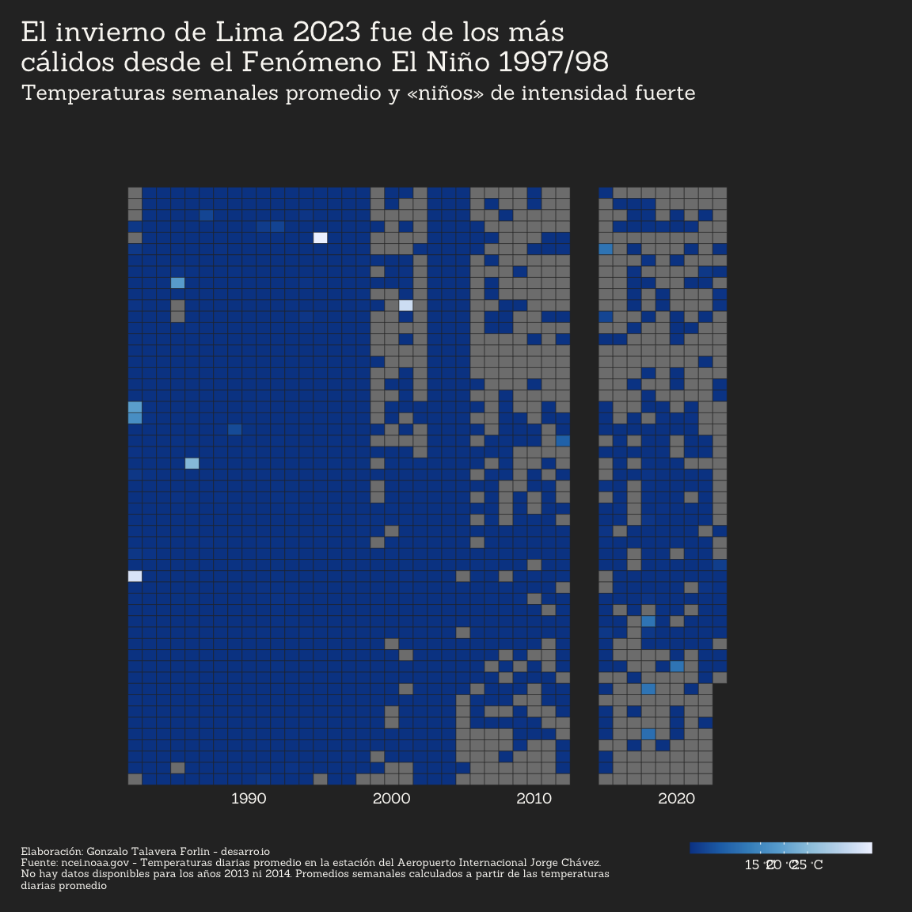
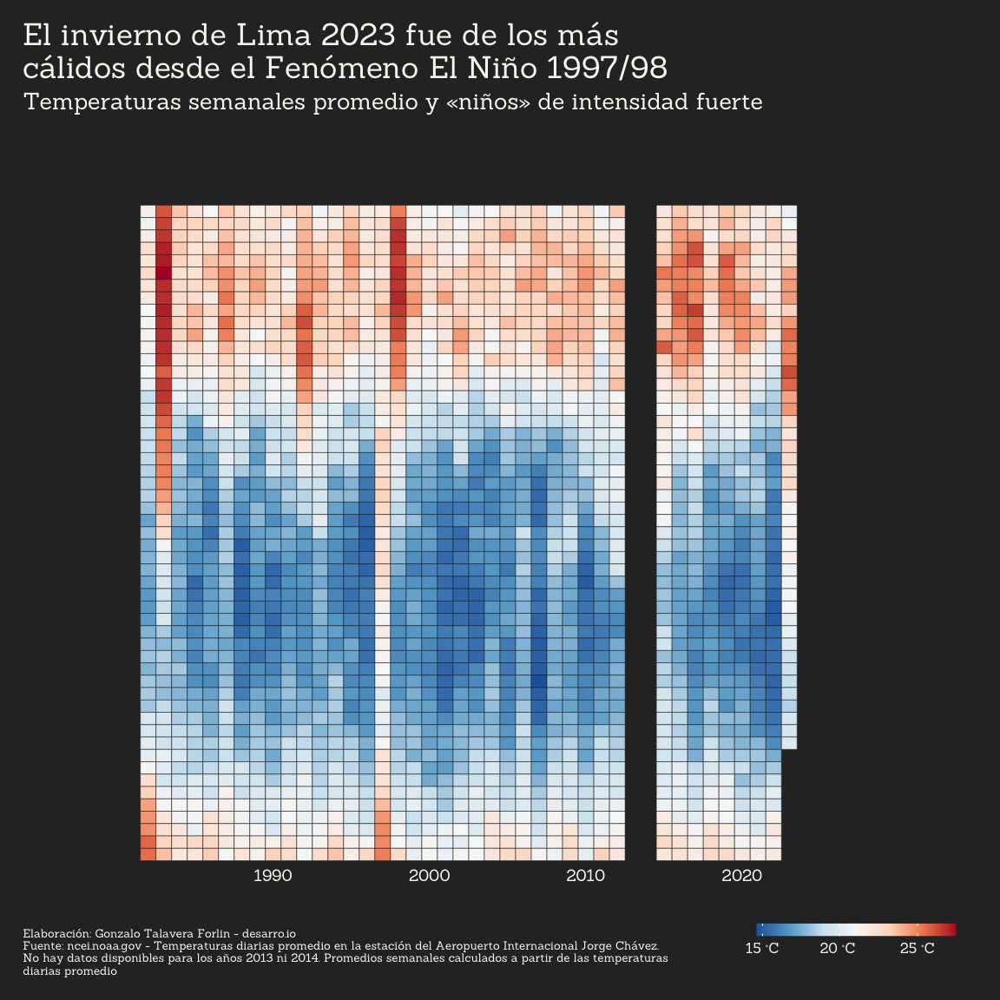
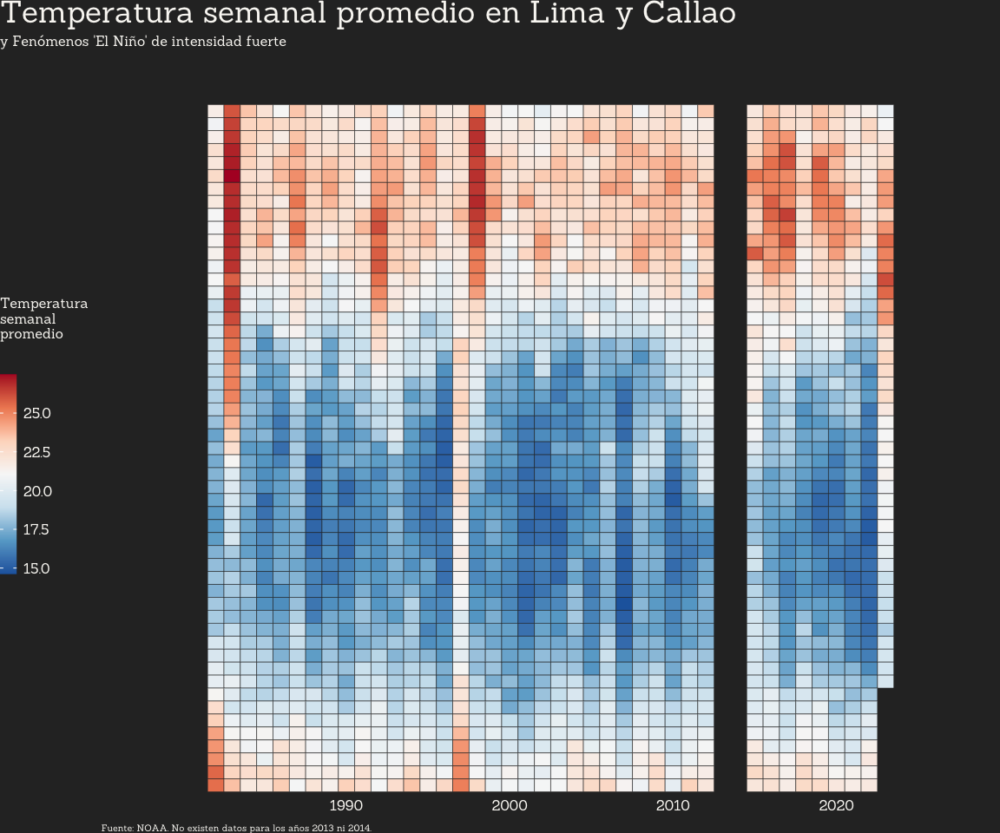

Rows: 384,667
Columns: 8
$ city <chr> "Pucallpa", "Pucallpa", "Pucallpa", "Pucallpa", "Pucallpa", "P…
$ prcp <dbl> NA, NA, NA, NA, NA, NA, NA, NA, NA, NA, NA, NA, NA, NA, NA, NA…
$ tavg <dbl> 25.0, 30.6, 31.7, 31.2, 29.4, 26.0, 28.3, 25.1, 23.7, 26.6, 27…
$ tmax <dbl> 31.1, 35.0, 37.8, 37.2, 37.2, 36.1, NA, 33.9, 27.2, NA, 32.2, …
$ tmin <dbl> 22.2, 22.2, 22.2, 22.8, 22.2, 22.8, 21.1, 22.8, 22.2, 21.1, 22…
$ station <chr> "PEM00084515", "PEM00084515", "PEM00084515", "PEM00084515", "P…
$ name <chr> "CAP FAP DAVID ABENZUR RENGIFO, PE", "CAP FAP DAVID ABENZUR RE…
$ date <date> 1963-01-03, 1963-01-05, 1963-01-06, 1963-01-07, 1963-01-08, 1…Gráficos de temperaturas y lluvias en el Perú
Cargar datos de NOAA
- Perú: todas las estaciones, desde 1947 en adelante
Data wrangling
daily_data <- per_noaa_1947_2023
weekly_averages <- per_noaa_1947_2023 |>
mutate(
week = week(date),
year = year(date)) |>
group_by(
station, year, week) |>
summarize(
city = first(city),
prcp = mean(prcp, na.rm = TRUE),
tavg = mean(tavg, na.rm = TRUE),
tmax = mean(tmax, na.rm = TRUE),
tmin = mean(tmin, na.rm = TRUE),
name = first(name)
) |> suppressMessages() |>
ungroup()
yearly_averages <- per_noaa_1947_2023 |>
mutate(
year = year(date)) |>
group_by(
station, year) |>
summarize(
city = first(city),
prcp = mean(prcp, na.rm = TRUE),
tavg = mean(tavg, na.rm = TRUE),
tmax = mean(tmax, na.rm = TRUE),
tmin = mean(tmin, na.rm = TRUE),
name = first(name)
) |> suppressMessages() |>
ungroup()
cat("daily_data:\n")daily_data:glimpse(daily_data) Rows: 384,667
Columns: 8
$ city <chr> "Pucallpa", "Pucallpa", "Pucallpa", "Pucallpa", "Pucallpa", "P…
$ prcp <dbl> NA, NA, NA, NA, NA, NA, NA, NA, NA, NA, NA, NA, NA, NA, NA, NA…
$ tavg <dbl> 25.0, 30.6, 31.7, 31.2, 29.4, 26.0, 28.3, 25.1, 23.7, 26.6, 27…
$ tmax <dbl> 31.1, 35.0, 37.8, 37.2, 37.2, 36.1, NA, 33.9, 27.2, NA, 32.2, …
$ tmin <dbl> 22.2, 22.2, 22.2, 22.8, 22.2, 22.8, 21.1, 22.8, 22.2, 21.1, 22…
$ station <chr> "PEM00084515", "PEM00084515", "PEM00084515", "PEM00084515", "P…
$ name <chr> "CAP FAP DAVID ABENZUR RENGIFO, PE", "CAP FAP DAVID ABENZUR RE…
$ date <date> 1963-01-03, 1963-01-05, 1963-01-06, 1963-01-07, 1963-01-08, 1…cat("\n")cat("weekly_averages:\n")weekly_averages:glimpse(weekly_averages)Rows: 63,088
Columns: 9
$ station <chr> "PE000084377", "PE000084377", "PE000084377", "PE000084377", "P…
$ year <dbl> 1973, 1973, 1973, 1973, 1973, 1973, 1973, 1973, 1973, 1973, 19…
$ week <dbl> 1, 2, 3, 4, 5, 6, 7, 8, 9, 10, 11, 12, 13, 14, 15, 16, 17, 18,…
$ city <chr> "Iquitos", "Iquitos", "Iquitos", "Iquitos", "Iquitos", "Iquito…
$ prcp <dbl> 16.5500000, 7.0000000, 5.8500000, 8.1571429, 31.8285714, 11.00…
$ tavg <dbl> 26.30000, 26.27143, 26.85714, 25.81429, 26.01429, 26.62857, 28…
$ tmax <dbl> 31.00000, 28.00000, 33.00000, 29.50000, 34.00000, 32.20000, 34…
$ tmin <dbl> 23.16667, 22.40000, 23.00000, 22.66667, 22.80000, 23.42857, 24…
$ name <chr> "IQUITOS, PE", "IQUITOS, PE", "IQUITOS, PE", "IQUITOS, PE", "I…cat("\n")cat("yearly_averages:\n")yearly_averages:glimpse(yearly_averages)Rows: 1,328
Columns: 8
$ station <chr> "PE000084377", "PE000084377", "PE000084377", "PE000084377", "P…
$ year <dbl> 1973, 1974, 1975, 1976, 1977, 1978, 1979, 1980, 1981, 1982, 19…
$ city <chr> "Iquitos", "Iquitos", "Iquitos", "Iquitos", "Iquitos", "Iquito…
$ prcp <dbl> 10.022789, 4.602620, 25.864286, 12.961765, 10.153143, 8.531755…
$ tavg <dbl> 26.38711, 26.06619, 25.80655, 25.40956, 25.39260, 25.44603, 25…
$ tmax <dbl> 32.07778, 31.55446, 31.51923, 31.44828, 31.11957, 31.73659, 32…
$ tmin <dbl> 22.37069, 21.59500, 21.79654, 21.57237, 21.90419, 21.91843, 22…
$ name <chr> "IQUITOS, PE", "IQUITOS, PE", "IQUITOS, PE", "IQUITOS, PE", "I…cat("\n")Temperatura promedio 1947-2023
# Hallar temperatura promedio 1947-2023
temp_avg_63_23 <- per_noaa_1947_2023 |>
filter(city == "Lima - Callao",
date > "1962-12-31") |>
select(date, tavg) |>
group_by(year(date)) %>%
summarize(tyear = mean(tavg, na.rm = TRUE)) %>%
pull(tyear) %>%
mean()
temp_avg_63_23[1] 19.51626# df_all <- per_noaa_1947_2023 |>
# filter(city == "Lima - Callao",
# date > "1962-12-31") |>
# select(date, tavg)
rain <- per_noaa_1947_2023 |>
filter(city == "Lima - Callao",
date > "1962-12-31") |>
select(date, prcp) |>
filter(date>"1981-12-31")
df <- per_noaa_1947_2023 |>
filter(city == "Lima - Callao",
date > "1962-12-31") |>
select(date, tavg) |>
filter(date>"1981-12-31")
df# A tibble: 14,523 × 2
date tavg
<date> <dbl>
1 1982-01-01 21.6
2 1982-01-02 21.9
3 1982-01-03 20.3
4 1982-01-04 21.7
5 1982-01-05 22.6
6 1982-01-06 21.5
7 1982-01-07 21.4
8 1982-01-08 22.1
9 1982-01-09 20.5
10 1982-01-10 21
# … with 14,513 more rowsPromedio por semana y promedio anual
`summarise()` has grouped output by 'year'. You can override using the
`.groups` argument.
`summarise()` has grouped output by 'year'. You can override using the
`.groups` argument.# A tibble: 2,111 × 4
year week tavg_week tyear
<dbl> <dbl> <dbl> <dbl>
1 1982 1 21.6 20.1
2 1982 2 20.9 20.1
3 1982 3 21.5 20.1
4 1982 4 22.4 20.1
5 1982 5 22.0 20.1
6 1982 6 22.6 20.1
7 1982 7 22.0 20.1
8 1982 8 21.8 20.1
9 1982 9 21.0 20.1
10 1982 10 21.0 20.1
# … with 2,101 more rowsHeatmaps semanales
Plot base
theme_heatmap <- function() {
theme_void() + # Use theme_void() as the base theme
theme(
text = element_text(
colour = "#F9F7F3",
family = "Sanchez"),
plot.background = element_rect(
fill = "#2D2D2D", color = NA), # #2D2D2D plot background
panel.background = element_rect(
fill = "#2D2D2D", color = NA), # #2D2D2D panel background
axis.line = element_blank(),
axis.text = element_text(size = 6), # Remove axis lines
plot.caption = element_text(
margin = margin(t = 20, unit = "pt"),
hjust = 0, vjust = 1, size = 5,
color = "#F9F7F3", family = "Sanchez"),
plot.title = element_text(
margin = margin(b = 3, unit = "pt")),
plot.title.position = "plot",
plot.subtitle = element_text(
margin = margin(b = 10, unit = "pt"),
size = 10),
axis.text.y = element_blank(),
axis.text.x = element_text(
size = 7
),
plot.margin = margin(
t = 10, r = 10, b = 10, l = 10, unit = "pt"),
legend.title = element_text(size = 6),
legend.text = element_text(size = 6),
legend.position = c(0.87, -0.1),
legend.direction = "horizontal"#,
# legend.spacing.y = unit(15, "pt"),
)
}Creamos una función para hacer el heatmap base
make_base_weekly_heatmap():function (weekly_dataset, custom_breaks = waiver(), custom_limits = waiver())
NULLp <- make_base_weekly_heatmap(
weekly_dataset =
filter(weekly_averages,
year > 1981,
city == "Lima - Callao"),
custom_breaks = c(1990, 2000, 2010, 2020),
custom_limits = c(1974, 2035))
# Print the plot
print(p)

Lluvias

Lluvia heatmap

Warning: Using `size` aesthetic for lines was deprecated in ggplot2 3.4.0.
ℹ Please use `linewidth` instead.
smooth
Lines Plot
Desviación del promedio
#
#
# temp_avg_63_23 <- lim_63_23_noaa |>
# select(date, tavg) |>
# pull(tavg) |>
# mean()
#
# df_deviations <- lim_63_23_noaa |>
# select(date, tavg) |>
# group_by(year(date)) |>
# summarize(year = year(date), tyear = mean(tavg, na.rm = TRUE)) |>
# mutate(deviation = tyear - temp_avg_63_23)
#
# ggplot(
# df_deviations,
# aes(x = year, y = deviation, fill = "red")) +
# geom_col()